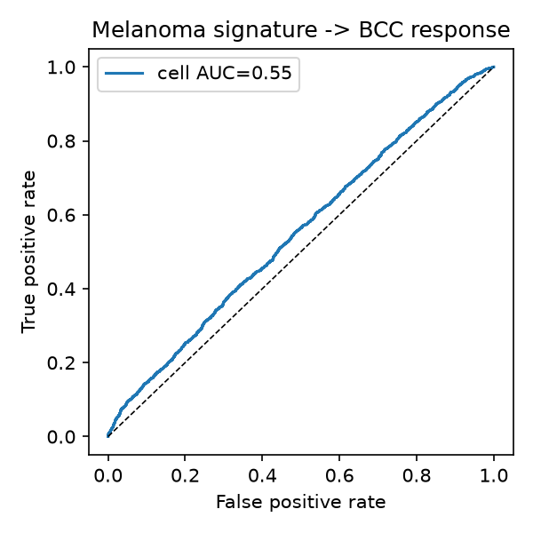
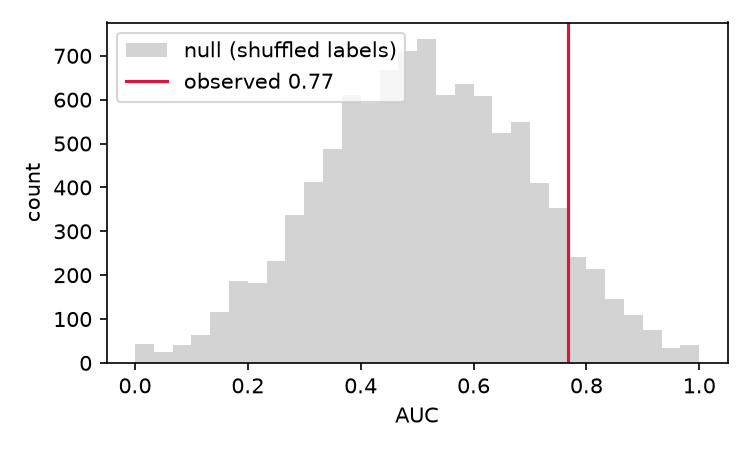

Reading immune cells to predict immunotherapy response
A CD8 T-cell signature built on melanoma, then tested on a cancer it had never seen.
Checkpoint immunotherapy takes the brakes off the immune system so it can attack a tumor. It works well for some patients and does almost nothing for most, and doctors cannot reliably tell the two groups apart before treatment starts. I wanted to see how far I could get on that question with public data and a laptop.
I started from published single-cell data on melanoma patients followed through anti-PD-1 treatment. Inside their CD8 T cells, the killer cells the drug is meant to unleash, I looked for the genes that were more active in the people who later responded. That set of genes became the signature.
Then the test that actually matters. I took the melanoma signature and scored it on a completely different cancer, basal cell carcinoma, that it had never been trained on. It still ranked responders above non-responders, at a patient-level AUC of 0.77.

What the code does
The repository is four short scripts, run in order:
- Discover. Find the genes that separate responders from non-responders in melanoma CD8 T cells.
- Clean. Drop ribosomal, mitochondrial, and stress genes that fake a signal.
- Validate. Score the basal cell carcinoma cohort and measure the separation.
- Stress-test. Put a confidence interval and a permutation test on the number.
Anyone can clone the repo, download the same public data, and reproduce every number on this page.
The signature
Fifty genes, led by a stem-like memory program in CD8 T cells. These were already tied to checkpoint response in the literature, so recovering them from raw data told me the method was sound. The new part was watching them carry over to a second cancer.
TCF7 CCR7 IL7R CD28 SELL LAT CD44 CD69 STAT4 DGKA PTK2B DEF6 GPR183 FOXP1 CLEC2D NLRC5 JAML LTB IL16 ARHGAP15 and 30 more.
What I don't trust yet
The validation set had eleven patients. That is small, and the statistics say so plainly. The 95% confidence interval runs from 0.40 to 1.00 and the permutation p-value is 0.08, above the usual 0.05 line. So I read this as a lead worth chasing, not a result to stand on.

Two more honest caveats. The work is a reanalysis of public datasets, not new patient data, and the two cohorts come from different labs, so technical differences between them could be part of what I am seeing. None of this touches patient care. The next step is pooling more public cohorts to push the patient count up and see whether the signal holds.